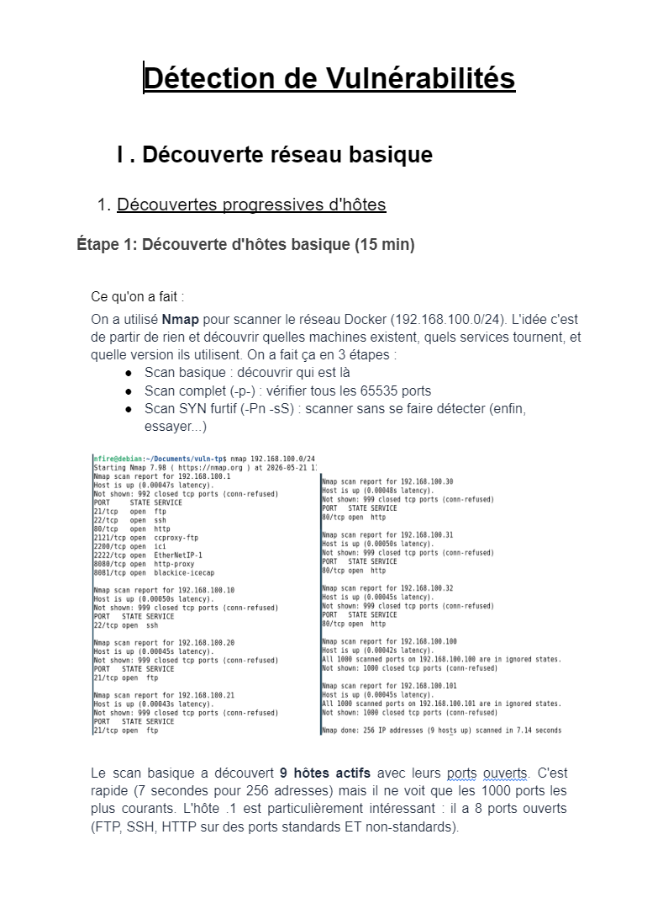
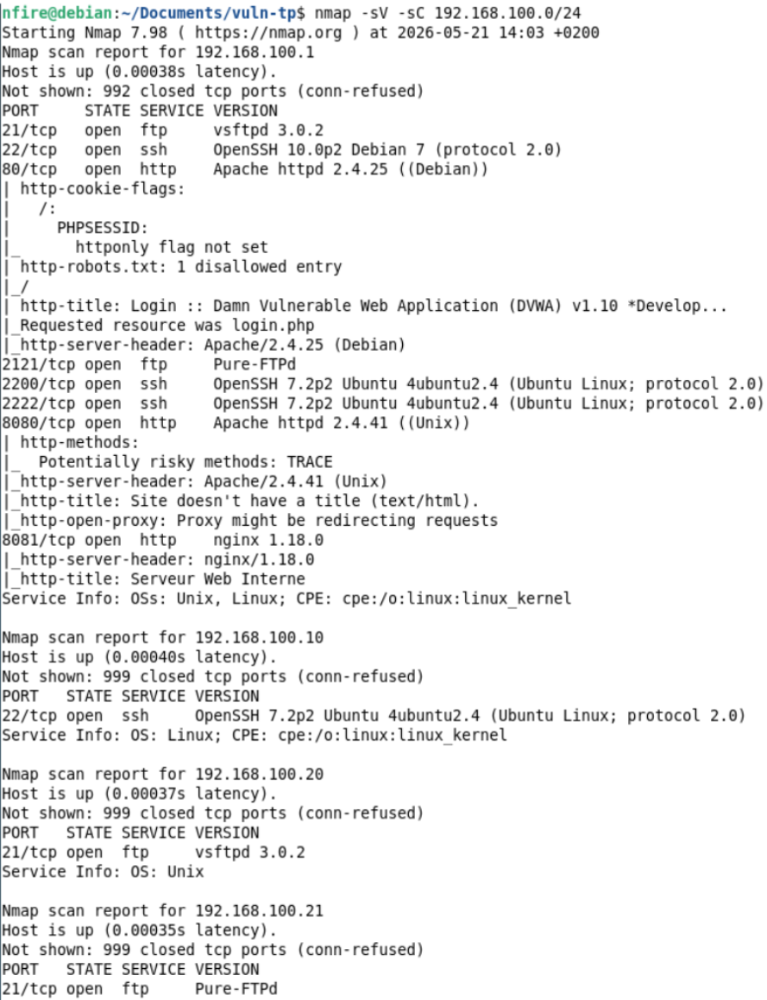
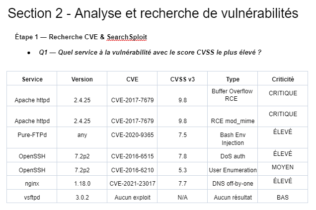
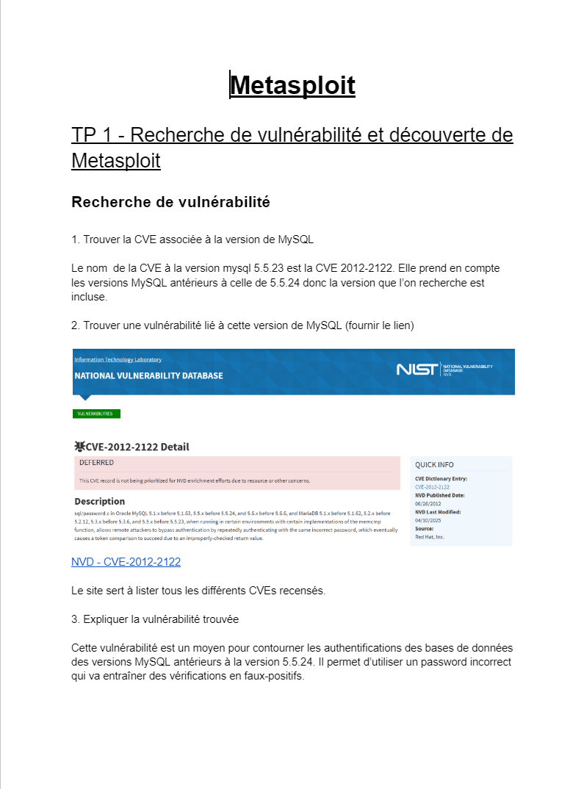
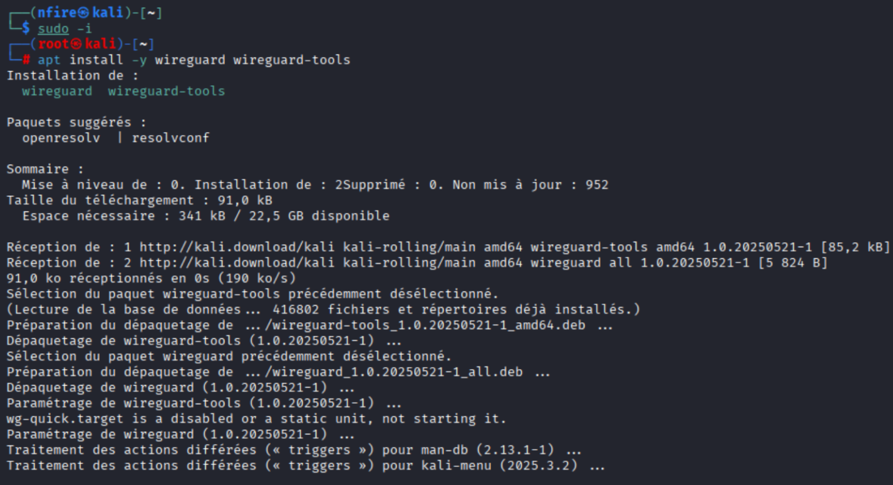
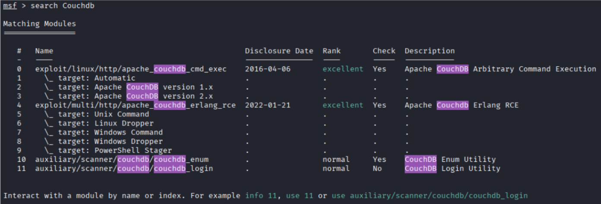
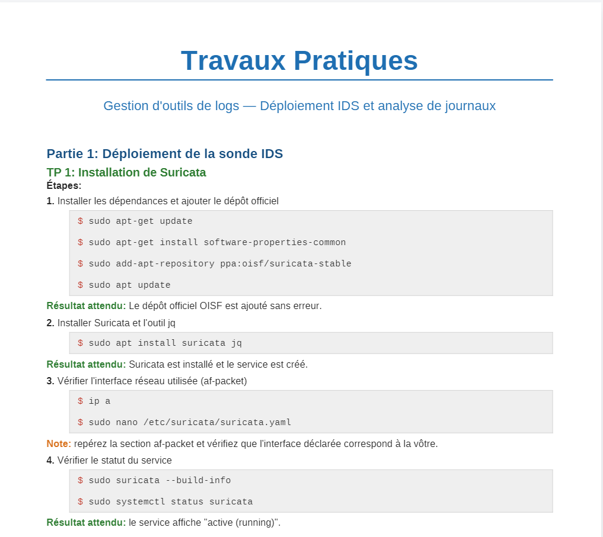
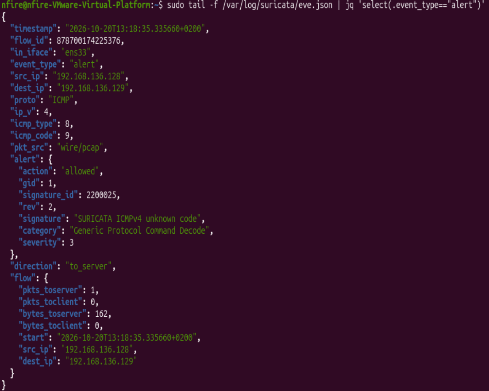
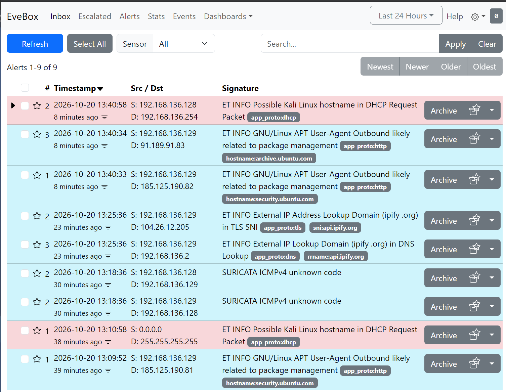

Cartographie réseau par scan en cours
Application web de cartographie automatisée d'un parc informatique à partir de scans réseau : hôtes, ports exposés et criticité des actifs.
Difficultés : calcul des distances entre hôtes pour le graphe ; plages IP trop larges qui provoquent des scans incomplets ou des timeouts.
Scripting Python, parsing de résultats Nmap, visualisation de données, optimisation de requêtes réseau.
Voir le cahier des charges
Détection et classification de vulnérabilités
Veille et qualification de vulnérabilités via CVE et CVSS, priorisation selon la criticité et rapports de synthèse pour les équipes techniques.
Difficultés : gros volume de résultats à trier ; distinguer le théorique de l'exploitable ; scores CVSS incohérents selon les sources.
Analyse de risques, lecture des bases CVE/NVD, priorisation, rapports techniques.



Voir le cahier des charges
Reconnaissance réseau et Metasploit
Scans Nmap, exploitation de plusieurs machines vulnérables (dont MySQL, CVE-2012-2122) avec extraction et cassage de hashs, jusqu'à la capture de flags.
Difficultés : exploits à configurer précisément (ports, payloads) ; ports non standards ; lien entre services détectés et modules Metasploit.
Pentest, Metasploit Framework, cassage de hashs, méthodologie d'audit offensif.



Voir le cahier des charges
Durcissement d'un noyau Linux
Paramètres sysctl pour renforcer la sécurité réseau et la protection mémoire, limites de ressources contre les attaques par épuisement et script de validation automatisé.
Durcissement système, sécurité réseau, automatisation de contrôles.
Gestion d'outils de logs
Déploiement d'un IDS pour détecter scans et comportements anormaux, avec corrélation des alertes et des logs de connexion pour distinguer activité automatisée et manuelle.
Difficultés : seuils de détection à calibrer contre les faux positifs ; distinguer un scan lent du trafic légitime.
Déploiement IDS, analyse de logs, corrélation d'événements, détection d'anomalies.



Voir le cahier des charges